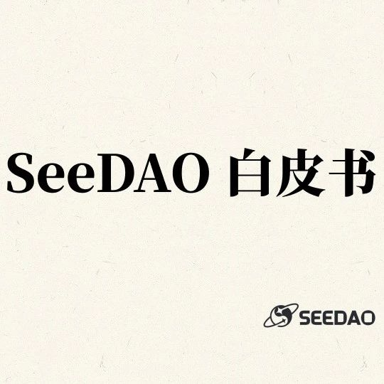

← Back to Archive
SeeDAO 白皮书：数字城邦
作者: 唐晗
发布时间: 2023-09-27 11:23:38
分类:
SeeDAO白皮书, SeeDAO
这份白皮书的主要目的在于阐明 SeeDAO 的愿景，指出我们要建设一个怎样的数字城邦，为什么要建设这样一个数字城邦，以及建设这个数字城邦的原则、质料和工具。

作者：唐晗
联合作者：白鱼，Frozen
排版：INES
审核：Ines
经过三个月的讨论、写作、修改，经由节点投票生效后，SeeDAO白皮书终于问世了。 白皮书的诞生，总结了自2021年11月至2023年9月，规模达1.2万人、协作者达2千人的SeeDAO社区实践，最终所追求的意义指向——基于区块链构建一个以追求“ 好的生活” 为目的的社会。出于这样的目的，这也是一份没有计算公式的白皮书。 白皮书预示着这样一种倾向：让Web3从金融走向社会，走向人。过去十几年，Web3在金融的道路上一路狂飙，并大获成功，但作为本来目的的人，反而被搁置了。而这份白皮书想要做的正是把“人”和“生活”捡回来，让Web3重返生活——或许它的构想相较于辽阔的社会命题还尚为稚嫩，但开启这一步重要无比。 对于那些关心SeeDAO发展路线和细节的朋友来说，如果你们没有在这份文件中看到自己感兴趣的细节内容，也请不要心急。因为这份白皮书的主要目的在于阐明 SeeDAO 的愿景，指出我们要建设一个怎样的数字城邦，为什么要建设这样一个数字城邦，以及建设这个数字城邦的原则、质料和工具。总而言之，就是明确城邦的道、材、礼、法、器。这份白皮书在SeeDAO的作用是战略性质的，是城邦的总纲，因此不会涉及到过多具体的细节。在其发布后，城邦会根据自己所处的战略阶段，发布和更新经济白皮书、技术黄皮书和社区发展橙皮书，服务城邦的发展需要。 最后，我们想对所有参与白皮书工作的成员，以及所有参与SeeDAO建设的贡献者表示深深的感谢。这份白皮书虽然有明确的撰稿人，但实乃工作组成员共费心力的结果。在这份文件背后，也对应着数千人在实践上的疑问与领悟。没有这些人，白皮书将是空中楼阁。 第一章：城邦之道 背景 从比特币问世以来，我们已经有了属于赛博空间的电子货币、金融基础设施、DID、出版设施……构建一个网络社会的拼图已经一块块浮现，如今只差最后一步，那就是将这些拼图拼在一起。 然而，沉浸在金融的幻觉中，我们在这一步面前一直止步不前。长期以来，Web3行业的做法是依靠金融手段来获取用户，结果换来的是为钱而来的金融蝗虫。当财富效应消失后，这些金融蝗虫便像烟雾一样消失不见，留下来的技术空壳始终无法拼起社会的版图。没有扎实的社会网络及相应的需求，各类被吹捧得天花乱坠的Web3产品宛若构建在沙滩上的楼阁，随时处于坍塌的风险中。 我们完全有必要构建一个扎实的网络社会，而现在已经到了一个可以将这些拼图拼在一起的时刻。这不仅仅是因为技术版块的成熟，更因为几千年来的地缘秩序传统正在崩塌。在虚无与混乱中，人类呼唤新的组织形态，以探索更具价值与意义的生活，确保人更广阔的自由和幸福。以上，正是我们构建这个名为SeeDAO的数字城邦的背景与原因。 意义 SeeDAO存在的意义是基于区块链构建一个以追求“好的生活”（即幸福）为目的的社会。它的具体形态是一个由统一的网络空间和分散在不同地域的物理节点所构成的数字城邦。而在追求“好的生活”这一目的上，城邦的善体现在三点：促进人与人之间的连接；促进个人的内在发现与涌现；提供对大家有益的公共生活。 幸福的尺度是身心的愉悦，而不只是金钱的多少和科技的发达程度。幸福指向的是有意义的生活，因而便不单纯是一个个人问题。这是因为，人的心灵不能脱离他人存在，人感受到的意义也是在与外部环境和他人的共在中不断涌现和确认的。如果幸福有路径，我们认为应当是在共在中“作成”自己，是“共在，涌现，逍遥“。 共在是城邦的前提。城邦是不同的人连接在一起相互作用后形成的网络，它本身是一个动态演变的生命体。城邦是意义的发生场，它应当尽可能为城邦内的成员制造更多的相遇与交集，集体协作则是其中最重要的一种方式。任何一个加入城邦的SeeDAO成员应该意识到自己是生活在共在之中，并在共在中呈现自己的存在的。 涌现是个人在城邦中存在的形态。我们相信，每个人生而有其“道”，或曰其天命与天性。好的生活应该让每个人充分发挥自己的天性，展开自己内在的“道”，从而实现自己的天命。涌现正是个人的“道”（内在秩序）在城邦中逐步展开和发展的过程，是实现个人自由的必经之路。它最明显的三个特征是作、作品与生成式主体。 “作”是人类的基本特征。人并非活在一个冷冰冰的物理世界里，而是活在不断被自己理解和建构的事件中。由于具备主观能动性和行动力，人需要在一个又一个的事件中做出选择，并以自己的行动参与对世界的改变，这个过程我们称为“作”。 “作”必然产生“作品”。每个“作品”都有其特征，可被城邦其他成员品评。“作品”反映了“作者”的内在自我，杰出的“作品”可以直接呈现出“作者”的灵魂，并在城邦的历史中流传。 城邦将尽可能记录成员“作”的过程与“作品”。于是，根据这些记录，个人在城邦的身份和角色也就随时根据其“作”与“作品”动态生成着。此人在城邦内的公共声誉，在城邦中可享受的福利和可调度的权限应当与其身份相关。 当不同的个体在共在中涌现时，他们或许会发现个体价值实现之间的冲突与张力。然而，如何平衡个人的内在和外在，平衡个人的价值主张和城邦的价值主张，从心所欲而不逾矩，共在于城邦又不为城邦所累，这就需要人们走向“逍遥”。 “逍遥”是城邦中自由的最高境界，它象征了一个人在精神和物质，内在和外在同时达到了和谐。在这里，我们使用“逍遥”而不是“自由”，是强调SeeDAO所追求的最终目的是幸福，而不是在无止境地在物质上追求更多的选项。 第二章：城邦之构成 城邦由疆域内的人与物构成；其中，人是城邦最重要的构成要素，是疆域得以成立和创造、城邦之物得以生灭的根源，也是城邦的终极目的。 城邦应该有明确的边界，以确定某人是否在城邦之内，这个边界就是城邦赋予给个人的身份。城邦应该有明确的账户系统让城邦内外的人都可以识别此人是否是SeeDAO成员，并有清晰的进入流程可让人知晓如何成为城邦的一员。由于我们对幸福的理解是在共在中“作成”自己，因此城邦的身份应该是生成式的，支持个人以“作”和“作品”动态生成自己在SeeDAO的身份，并通过该身份获取在城邦中的权限。这主要体现在此人在SeeDAO获得的NFT、SBT、流动性token和不可转让的积分上。 城邦的疆域由城邦所有的网络空间、物理空间、物理与虚拟叠加形成的现实空间构成。疆域指的是人发生活动的场域，其扩张与收缩与城邦成员的需求相关。与物理空间不同的是，网络空间的延展性几乎可以是无限的，因而在性质上具有很大的差异。尽管如此，由于在网络空间和物理空间中展开活动的人是一体的，因此这些空间应该被打通，其历史、货币、权限皆应该保持某种一致性，让它们可以被统一识别为SeeDAO的公共空间，且遵循城邦的规则运转。 人在城邦中相互连接“作成”自己的过程，也是人在城邦的公共物品的基础上，不断创作作品与物的过程。随着城邦中成员的增加，人们对公共物品的需求也会不断增长。具体来说，城邦中的物主要包括：公共金库中的token资产、物理空间中的公共实体资产、网络空间的公共知识资产、网络与物理空间的公共服务权益资产、城邦历史数据等。 SeeDAO成员在城邦的行动与事件构成了SeeDAO的历史。历史包含了人与人之间关系的变化、物在不同人之间所有权的变化，以及物的消耗、转移和创造等。SeeDAO的历史是SeeDAO全体成员集体创作的最大作品，直接在实践中决定和呈现了SeeDAO是什么，因而SeeDAO也是在大家共同创造的历史中动态生成的。同样地，个人在SeeDAO的历史是此人在SeeDAO的最大作品，决定和呈现了他在SeeDAO内的主体性，直接作用于他在SeeDAO的“身份”。由于历史既是自由进出于SeeDAO的成员们最基本的共识基础，也构成了人们最终的意义指向，因此在城邦中拥有非凡的意义，是城邦最重要的公共物品之一。 让我们这样描述历史对城邦的重要性：当城邦中还有人创造历史时，城邦就活着；而当连最后一个愿意维护和同步城邦历史的人都消失的时候，城邦就死去了。对于个人来说也是如此。“不失其所者久，死而不忘者寿”是城邦对生命哲学的立场。 第三章：城邦之礼 如第一章所论述的：“城邦的善体现在三点：促进人与人之间的连接；促进个人的内在发现与涌现；提供对大家有益的公共生活。” 在城邦诸要素完备时，应当以最大程度促进城邦之善的基本立场，去协调城邦诸要素之间的关系。 个人与城邦之间的关系
自由进退。即：加入城邦，是否在城邦中活跃，是否退出城邦应当完全出于成员个人自愿。当个人离开城邦时，凡根据规则属于他个人的东西，城邦应当允许他带走。因为进出城邦是完全自由的，城邦中的个人需要对自己的选择与行动负责。 生成式主体。个人在城邦中的身份是随着个人的选择与行动随时生成的。城邦有责任记录成员对城邦的各类贡献，同时根据贡献分发SeeDAO的token、声望值、象征核心成员身份的NFT Seed以及各类SBT，并根据种种记录生成SeeDAO成员的个人身份。 公共服务与个人身份直接挂钩。随着城邦中的贡献者越来越多，大家共创获得的公共资产与公共服务也必然越来越多。应当明确，这些公共物品的使用遵循“人人为我，我为人人”的原则，优先分配给城邦的贡献者们，且贡献越大的人，享受城邦的公共服务应当越多。 城邦治理权与个人身份挂钩。这部分遵从SeeDAO元规则及治理手册的规定。 城邦为个人提供尽可能多有益的连接机会，这不仅体现在扩大SeeDAO全球网络（涵盖跨越全球的人际网络、空间网络与活动网络）上，更体现在SeeDAO疆域内部构建出一个可识别的身份统一体，基于该体系降低信任成本上。 城邦鼓励个人的“作”与涌现。作品是一个人灵魂的直接呈现；城邦内职业虽然有差异，但不同职业都能造就出杰出的作品，这一点却并无不同。城邦应该构建出与作品好坏相称的声誉体系、社交体系，以及能够记录、传播城邦内不同职业杰出作品的历史评述体系，促进个人在自己喜欢的领域创作。 全体成员在SeeDAO内共同创造和沉淀出的数据（包括身份数据、社交关系数据、城邦历史等），是城邦最大的公共资产。城邦有责任维护这些数据，并以合法机制授权其他应用使用这些数据。 城邦内组织与组织之间的关系
在城邦内，个人可根据相应规则自由结社和退社，形成和解散城邦内工作组。 依据组织与城邦全体利益之间的关系，城邦内工作组之间有远近之分。例如：城邦的最内侧是市政厅、孵化器和SeeDAO OS；其次是公共项目和各大公会；次之是内部孵化的商业项目；再次之是外部寻求进入SeeDAO的商业项目（可纳入观察者名单）。 城邦应该组织离公共利益的远近，制定不同组织在SeeDAO中所应遵循的规则和享受的权益。原则上，应当将资源优先倾斜给与城邦公共利益更相关的组织。 由于工作组在SeeDAO内也是随时成长的，其与SeeDAO公共利益的远近关系也是随时在变动的。应当定期回顾评定工作组在城邦中的状态，变动城邦的远近关系地图。 城邦应该提供相应的技术基础设施，让SeeDAO成员可以识别什么是城邦内组织，以及这些组织与城邦的远近关系。此外，由于每个成员在城邦的身份都是根据自己的行动随时生成的，每个人和不同组织的远近关系（例如是否具备进入某组织信息库的权限）都不相同。在城邦提供的基础设施中，也应该支持SeeDAO成员识别自己与不同组织的远近关系。 城邦内组织应该依照规则合法使用公共资源；当组织间产生冲突时，也应当遵循规则诉诸公共讨论。 城邦应当记录城邦内工作组所有的提案、提案批准、激励发放、事后总结、声誉积累记录，并定期将核心工作组的历史归并到SeeDAO历史中。 在城邦内，无论是个人还是组织，其最大的善和正当性是维护和扩展城邦公地，体现在具体实践中，即其是否能够最大程度地为城邦服务，增加和维护城邦的公共物品。理想状态中，在城邦中获取公共资源的多少应该与某人或某工作组为城邦贡献的多少（历史贡献的多少，潜在贡献的多少）相关。 意义的铆：历史
无论城邦中的个人对生活持何种立场，城邦认为人们在城邦中指认意义的终极落脚点是人的历史。 城邦必须有自己的公共历史，至少保证在每年修整一次城邦史。 所有涉及到公共事务的部分必须走提案归档，形成历史可查的公共资料库。 城邦公共历史的每一个版本都公开透明，不可篡改，以保证其公正性。 除城邦的公共历史外，鼓励城邦里的个人记录自己的历史，与公共历史形成对照，以提供多元视角和真伪对照。 价值的尺度：$SEE
$SEE 为 SeeDAO 数字城邦基本货币，城邦内所发生的交易都应当以$SEE为支付方式。 $SEE 成为城邦内所发生交易支付方式的正当性，源自城邦为大家提供了公共物品。若如城邦，则这样的网络社会将不复存在，这样的交易也不可能发生。关于经济模型的部分，将在第四章进行详细论述。 第四章：城邦之法 凡人聚集之处必有公事，既是公事则必有公议。在城邦内，我们把有秩序的公议、公决和公共行动称为治理。 治理的目的是维持城邦的运转，并促进城邦的善。由于人是城邦最重要的要素，也是城邦的最终目的，因此维护城邦内人的共识和团结便是治理者最基本的工作。 治理必须合法，才能在城邦内产生效力。SeeDAO元规则及其相应机制是城邦内一切治理者及治理行为合法性的根本来源，节点共识大会是城邦最高的治理机构。 治理的好坏可被实际情况衡量。SeeDAO成员的多少、公共物品（城邦疆域、国库中的钱财、技术基础设施、数据与历史、公共服务及福利等）的增减、SeeDAO涌现出的个人作品等皆可以反映城邦的状态。治理的好坏需要被记录进入城邦史。 如果将SeeDAO这座数字城邦比作一款游戏，那么在游戏中，玩家的核心资产将有四类，分别为流动性代币$SEE、流动性NFT Seed、声望积分WANG、SBT。应对城邦内的不同场景，治理者可组合使用这些工具来进行治理。以下将对此四类资产进行说明： 声望积分 WANG WANG是SeeDAO的声望积分，体现着成员在城邦的历史贡献。声望积分必须通过社区成员为城邦贡献来获取，而贡献类别与途径的划分和调整，由SeeDAO治理手册规定。 声望积分不可转移、不可交易。声望积分越多，意味着社区成员为SeeDAO做出的历史贡献越多，与SeeDAO的关系越密切。 不同级别的声望积分持有者，在社区具有不同级别的治理权； 当声望积分超过一定门槛时，该成员可以免费铸造SeeDAO Seed NFT，享受Seed背后对应的多种权益； 可根据成员每季度的声望积分和衰减公式，计算出该成员的当季有效治理积分，判断其是否有参与节点共识大会的资格； Seed NFT Seed是城邦核心成员的身份标识和文化符号。城邦不对外出售Seed；铸造Seed的唯一办法，就是社区成员在SeeDAO内积累声誉积分至超过一定门槛。 当城邦核心成员将Seed铸造出来后，可以将其在市场上流通交易。在Seed被出售后，该社区成员不再享受与Seed相绑定的各类权益。 原则上，SeeDAO节点共识大会的参与者必须是Seed的持有者。此外，SeeDAO对外谈判的社区福利和内部生产的公共资源，优先导向给Seed的持有者。 SeeDAO SBT 仅凭同质化的声望积分和非同质化的NFT仍然无法呈现出社区成员在社区中的样貌。因此，还需要引入各种各样的SBT，构成对SeeDAO成员角色、技能、行为、作品等的描述。 SeeDAO SBT将被集成在SeeDAO成员的身份体系下，成为社区成员对外编辑自我形象的质料。同时，一旦某个SBT（例如工作经历SBT）受到外界认同，该SBT也会为成员带来新的机遇，成为某种身份资产。 $SEE $SEE 为 SeeDAO 数字城邦基本货币，城邦内所发生的交易都应当以$SEE为支付方式。 $SEE成为城邦内所发生交易支付方式的正当性，源自城邦为大家提供了公共物品。因此，$SEE 的增发和销毁，不以价格上升为根本目的，而以维持城邦内公共物品可持续供给为根本目的。若$SEE的价格过低，则城邦内公共物品的供给将难以维持，城邦也将走向凋零。 $SEE第一阶段总量固定，共 10 亿枚。其中社区 POW 总量共 5 亿枚，每年最多释放 5000 万枚，分 10 年分发完毕。10 年以后，城邦将根据增加或维护公共物品的需求动态增发$SEE。 出于公共利益，城邦需要建立维持$SEE价格的经济机制，包括扩大$SEE的支付场景（即向更多人收取铸币税），增加$SEE的销毁场景等。在销毁场景中，其中最基本的是向调用了城邦内基础设施和数据的商业组织收税并销毁 ，以此造成$SEE的总供应量减少。此过程由协议自动执行，其实现将依赖于第五章详细论述的SeeDAO OS。原则上，在城邦发展的第一阶段，城邦所收取的税收回流进社区金库；在城邦发展的第二阶段正式进入销毁模式。其详细内容将在未来发布的SeeDAO经济白皮书中进行规定。 按照现阶段社区节点共识大会和三层提案机制，记录成员POW贡献，并发放不可转让的链上积分。此阶段，声望代币和 $SEE 合一。 对第一阶段获得声望积分的成员按照 1:1 进行 $SEE 空投。此后，$SEE 进入自由流通时代，声望积分 WANG的分发与流动性代币 $SEE 分离。此时，应该发布SeeDAO经济白皮书，详细阐述关于$SEE、声望积分WANG和Seed的经济模型和计算公式。 SeeDAO在技术形态上的终极形态是构建城邦专用的公链Polis。Polis将用于承载城邦的各项经济活动，为各类Dapp和App提供安全可靠的链服务。Polis 上线以后，要增加SeeDAO贡献类别，为参与维护Polis 共识机制的节点发放 $SEE，并更新SeeDAO经济白皮书，调整经济模型。 第五章：城邦之器 上述四章阐述了我们对数字城邦的种种理念、想象和需求。要让梦想成真，就需要将它们落实到可感的技术物中，例如通过技术去定义城邦的疆域，定义成员们的身份和关系，固化SeeDAO的公共资产和税收基础，降低成员们在城邦内生活与创作成本等。 当前，城邦最重要的基础设施是能够让社区明确疆域和成员身份的SeeDAO OS和SeeDAO App，这也是本章重点的论述部分。未来，SeeDAO最重要的基础设施是属于城邦自己的公链Polis，届时将有专门的技术黄皮书对其进行介绍。 在三者的关系上，公链Polis是本质，SeeDAO OS是标准，SeeDAO App 是呈现。通过这些基础设施，SeeDAO将实现成员与城邦交互体验的自动化和游戏化，让城邦内的生活、创作与治理变得简易可行。 SeeDAO 生态 从技术架构上，SeeDAO 生态应用关系如下图所示：SeeDAO OS在生态的最底层，提供生态应用构建的标准；再上一层，是基于OS构建的城邦公共物品、公共服务和SeeDAO OS+；最上层是各类服务SeeDAO成员的城邦应用和生态应用。 SeeDAO OS Architecture Overview SeeDAO OS 为了支持SeeDAO 生态应用，OS 被设计成包含 Protocols 和 Sidecar 两个核心子系统。Protocols 是建立SeeDAO OS的基础，包含身份(Identity) 和 关系(Relationship)，使所有在 SeeDAO 城邦中的居民能够在SeeDAO生态中不同的应用之间保持一致的身份和关系。Sidecar 则提供了城邦核心的历史(History)记录能力及相应的APIs，使城邦中的公共生活和发展历程能够被准确且持久地记录和调用。 SeeDAO OS Protocols主要由两组协议构成，分别为身份协议和关系协议。 身份协议由SNS（SeeDAO Name Service ）和档案协议SPP（SeeDAO Profile Protocol）组成。当一个人开始拥有自己的SeeDAO Name时，他的一切关系和历史才能在城邦的技术系统中被记录和承认，也才算真正进入城邦的大门。而当此人在城邦中开始行动，留下自己的痕迹与作品时，他在城邦内的个人页面SeePASS（基于SPP构建的应用）也将随之更新。出于对个人隐私的尊重，SeePASS 也将提供匿名功能，服务于城邦内的某些匿名使用场景。 关系协议（SeeDAO Relation Protocol ，简称SRP）主要涉及到成员与城邦中其他人、物和事件之前的关系，包含社交关系和权限关系。例如：Alice和Bob是否曾经在SeeDAO某一工作组工作过；Alice是否有进入SeeDAO上海城市空间的权限；Alice 是否有参加社区项目评审的权限等。通过身份和关系，我们可以确定一个成员在城邦存在。 身份的生灭，人、物、事关系的变换构成了历史。历史的记录、聚合和调用能力被放置在了Protocol之外的Sidecar部分。在历史之外，Sidecar 还提供了数据处理(Data Processing)和权限访问管理(Access Control)等能力。数据处理模块能够将庞大的城邦生活所产生的数据进行处理、聚合、分析，使 OS 能够随时感知城邦的运行状态。权限访问管理模块则提供了整个城邦生活中统一、灵活、开放的访问管理，为向生态应用进行数据授权的合法操作提供了技术基础。 为了将人从繁重的、重复性的工作中解放出来， SeeDAO OS Sidecar 还会提供 Intent Engine，结合 AI 和自动化流程来帮助人完成城邦生活中大量重复性的工作。 SeeDAO OS+ 为了促进SeeDAO生态应用繁荣，降低生态应用的开发成本和开发难度，我们基于SeeDAO OS和SeeDAO Open API构建了SeeDAO OS+。 如下图所示，OS+能够提供完全开发的技术方案，提供网页端应用、手机端应用和桌面应用等多端的支持，使得在不同的硬件环境下和不同使用场景下都能保持城邦生活在线。我们认为，城邦内的应用在很多场景下都需要实现Web3与Web2的交融，这种状态将会在技术发展的历史上存在相当长的时间。因此，SeeDAO OS+的技术方案中将支持 dApps、Apps，以及混合应用形态(Hybrid Apps)。混合应用(Hybrid Apps) 是结合了去中心化技术和中心化的技术应用形式，能够充分利用两种技术方向带来的优势，同时保持用户的使用体验。 SeeDAO Public Utilities 同 SeeDAO OS+并肩存在的是专注于公共事业的应用组合，主要分为公共物品（Public Goods）和公共服务（Public Service）。公共物品是成员在城邦中不需要付费也能获得的资源。举例来说，提案和投票系统虽然具有维护成本，但在城邦内成员可根据相应规则直接参与，不需要付费。而公共服务虽然具有公共性，却可以考虑对外收费或按照其他规则进行分配，例如SNS等。 在SeeDAO中，公共项目的立项需要严格遵循城邦相应规则，而基于OS+构建的生态应用则不受限制，任何人都可以发布。以公共利益为优先的公共事业，和在OS+标准之上构建的不受限制的生态应用，将服务城邦成员的生活需求。这既保障了城邦生活享用资源的公平性，又能促使社区涌现，加速生态发展。 SeeDAO App 对成员而言，城邦生活需要可见和可感。所有应用，不论是公共物品、公共服务，还是 OS+上丰富的应用，都需要通过特定的事物来承载。在SeeDAO内，这个承载物便是 SeeDAO App。 所有的公共物品和公共服务都将在 SeeDAO App 中提供给城邦内的成员，而OS+上的生态应用也会在 SeeDAO App 中占有重要的版面。SeeDAO App 不仅仅提供网页端的应用，同时还会提供手机端和桌面端，使得所有城邦居民随时都能接入到自己的数字生活。 Polis：未来的城邦公链 虽然在这份白皮书中我们不会对城邦公链Polis进行过多论述，但可以肯定的是，随着城邦内人数的扩张和交易的大量发生，我们必须降低基础设施使用的单位成本。这就需要我们构建一条城邦自己的专用链。 Polis的推出将标志城邦在技术形态上的构建基本完成。从一无所有的社区走向数字城邦，再到构建生态应用繁荣的公链，这个计划听上去十分疯狂，但在实践上又如此真实。与那些先拿到巨资开发公链再发展生态吸引用户的项目相比，我们的路径看似不同，却又殊途同归——一个是从技术走向社会，而一个是从社会走向技术。我们终将实现技术与社会的交汇，编织出这样一个网络社会。而这背后的根本只有一个，那就是人。 在Polis推出后，等待SeeDAO的又会是什么呢？没有人知道。但我们肯定不会止步于此。一直以来，SeeDAO前进的步伐都十分激进，但我们并不害怕被指控为乌托邦的编织者。无论如何，请让我们记住第一章所说的，我们所做的一切是为了探索更具价值与意义的生活，确保人更广阔的自由和幸福。